Tracking Uncertainties and Covariances¶
References¶
Multitarget-Multisensor Tracking, Bar-Shalom and Yi, 1993
Tracking Uncertainties¶
Tracking uncertainties in AFSIM typically arise from processed sensor errors. These are the range_error_sigma (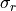), azimuth_error_sigma (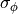), and elevation_error_sigma (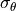). As the names imply, they represent one sigma () standard deviations according to a Normal distribution. They are defined in the sensor’s natural coordinate system, the Beam Coordinate System, BCS (which is often, but not always, aligned with the Part Coordinate System, PCS, of the articulated part). In this coordinate system the x-axis is oriented along the range vector, with azimuth and elevation errors defining uncertainty in the tangential coordinates.
Along a given direction 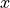, and for a zero mean value, the variance of a measurement is defined to be
(1)¶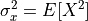
where 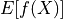 denotes the expected value of the function 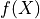.
As the notation implies, the variances of the sensor errors are given by the squares of the sigma values (they conform to a Normal distribution). For a given range  , the linear variances in the BCS (x,y,z) coordinate system are given by:
, the linear variances in the BCS (x,y,z) coordinate system are given by:
(2)¶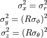
Covariance Matrices¶
The covariance measures the dependence or correlation of one independent variable with another. In 3-D Cartesian coordinates (x,y,z) there are three covariances: 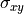, 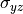, and 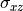 (it is understood that 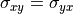, 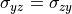, and 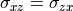). The covariance of a variable with itself is simply the variance (i.e., 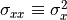, etc.).
For two directions and  , and for zero mean values, the covariance of a measurement is defined to be
, and for zero mean values, the covariance of a measurement is defined to be
(3)¶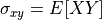
The full set of covariances in three dimensions is conveniently expressed in the form of a covariance matrix:
(4)¶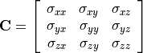
The measurement covariance matrix expressing the sensor measurement errors in the BCS coordinate system only has nonzero values along the diagonal (it is a diagonal matrix):
(5)¶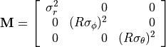
Transformation of Covariance Matrices¶
For simplicity in track reporting, it is good practice to express covariances with respect to a common coordinate system; for AFSIM this is the World Coordinate System (WCS). For this reason the measurement covariances need to be transformed to align with WCS.
From linear algebra, a diagonal matrix can be expressed in terms of a non-diagonal matrix using the relation:
(6)¶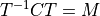
where 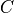 is the non-diagonal covariance and T is matrix used to transform the covariance to diagonal form. For AFSIM, this transform,  , is the WCS->BCS coordinate transform, and is the WCS-aligned covariance matrix that we want. Solving for :
, is the WCS->BCS coordinate transform, and is the WCS-aligned covariance matrix that we want. Solving for :
(7)¶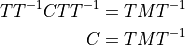
Thus the operation 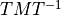 is performed for each measurement  of the form given in (5) to produce the matrix that is stored in WsfTrack’s measurement covariance field.
of the form given in (5) to produce the matrix that is stored in WsfTrack’s measurement covariance field.
Covariance Matrix Types in AFSIM¶
Although there are an unlimited number of possible covariance matrix types, AFSIM only recognizes two types that are passed in WsfTracks as measurement covariances or state covariances (products of Kalman Filters). One of these is the form expressed in (4), which only includes position uncertainties. The other form provides both position and velocity uncertainties in 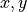, and  , and is expressed by a 6x6 matrix:
, and is expressed by a 6x6 matrix:
(8)¶![\bold{C^\prime} =
\left[ {\begin{array}{rrrrrr}
\sigma_{xx} & \sigma_{xy} & \sigma_{xz} & \sigma_{xv_x} & \sigma_{xv_y} & \sigma_{xv_z} \\
\sigma_{yx} & \sigma_{yy} & \sigma_{yz} & \sigma_{yv_x} & \sigma_{yv_y} & \sigma_{yv_z} \\
\sigma_{zx} & \sigma_{zy} & \sigma_{zz} & \sigma_{zv_x} & \sigma_{zv_y} & \sigma_{zv_z} \\
\sigma_{v_xx} & \sigma_{v_xy} & \sigma_{v_xz} & \sigma_{v_xv_x} & \sigma_{v_xv_y} & \sigma_{v_xv_z} \\
\sigma_{v_yx} & \sigma_{v_yy} & \sigma_{v_yz} & \sigma_{v_yv_x} & \sigma_{v_yv_y} & \sigma_{v_yv_z} \\
\sigma_{v_zx} & \sigma_{v_zy} & \sigma_{v_zz} & \sigma_{v_zv_x} & \sigma_{v_zv_y} & \sigma_{v_zv_z}
\end{array}} \right]](../../_images/math/a7ce3801a2e1129c762ca6cd43102691c7e956c9.png)
where  ,
,  , and 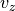, represent the components of the tracked target’s perceived velocity vector.
, and 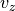, represent the components of the tracked target’s perceived velocity vector.
Weighted Average Fusion of Covariances¶
Using AFSIM’s weighted average fusion, fusion of covariance matrices is performed when covariances are obtained from two separate raw tracks. This is done according to eq. 8.3.3-15 of ref. 1 (covariance fusion equation):
(9)¶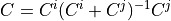
where 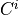 and 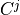 represent covariance matrices from the two distinct raw tracks, and is the fused covariance stored in the state covariance field of the local track.
A more intuitive form of (9) is obtained by using the inverse of the covariance matrices (called the information matrix):
(10)¶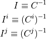
In which form, the covariance fusion equation becomes:
(11)¶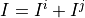
Visualization of Covariance Matrices¶
The three dimensional covariance of the form in (4) can be represented as an ellipsoid centered on the track’s estimated location and oriented according to the transform that diagonalizes the covariance (6). This representation is useful as a visualization aid and is supported in AFSIM script using the Ellipsoid and WsfDraw script classes. For example, a script that provides this visualization for track measurement covariances is as follows:
script void DrawCovariance(WsfTrack aTrack)
WsfDraw draw = {};
draw.SetId(aTrack.TrackId().Number());
draw.Erase(aTrack.TrackId().Number());
draw.BeginLines();
draw.Vertex(aTrack.Originator());
draw.Vertex(aTrack.Target());
draw.End();
WsfCovariance PWCS = aTrack.MeasurementCovariance(); // The WCS-oriented covariance from the track
draw.SetColor(1.0, 0.0, 0.0, 0.6);
WsfGeoPoint trackLocation = aTrack.CurrentLocation();
if (PWCS.IsValid() && aTrack.LocationValid())
{
double S = 100; // Scale factor to make small ellipsoids easier to see
Ellipsoid e = PWCS.EllipsoidNED(); // NED-referenced ellipsoid representation of the covariance
draw.BeginEllipsoid(e.OrientationHeadingDeg(), // See documentation.
e.OrientationPitchDeg(),
e.OrientationRollDeg(),
e.SemiAxisForward() * S,
e.SemiAxisSide() * S,
e.SemiAxisUp() * S);
draw.Vertex(trackLocation);
draw.End();
}
end_script